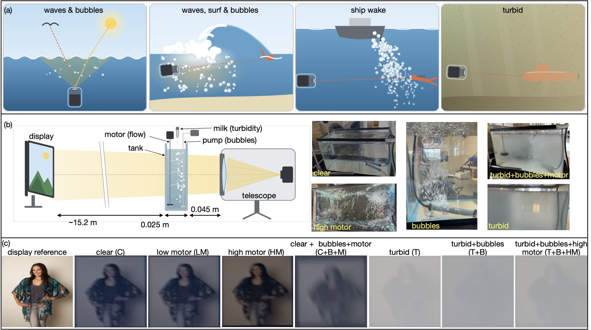
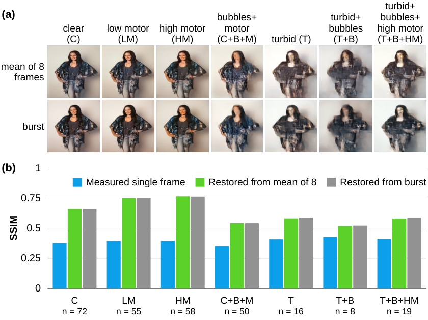
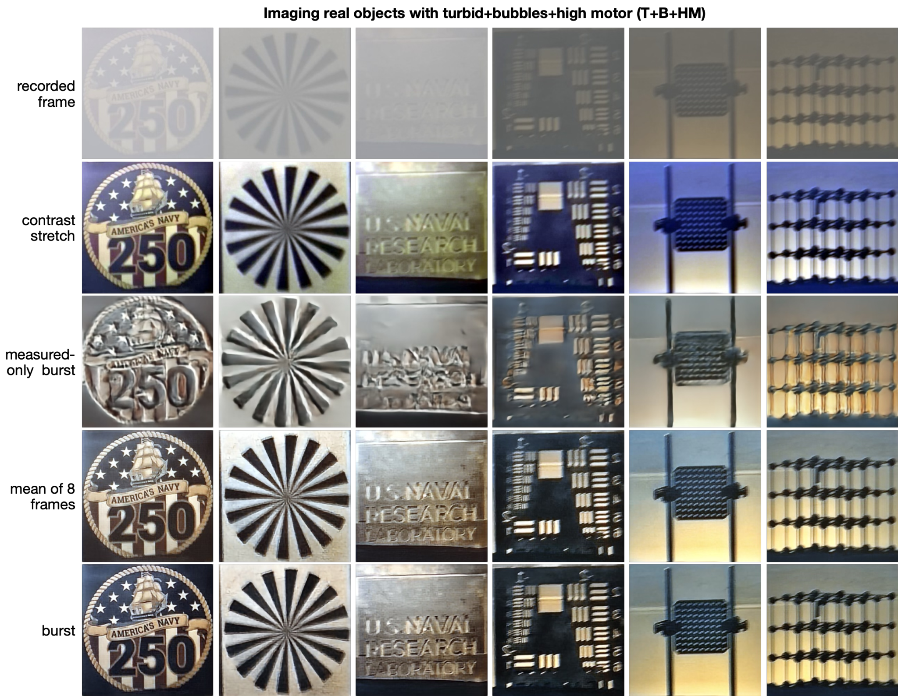
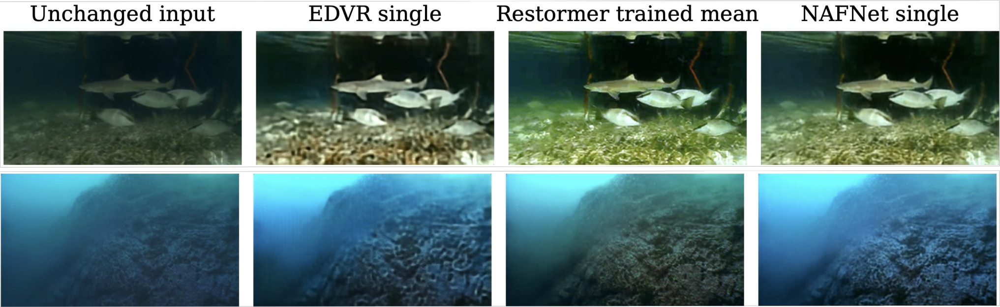

望远镜近旁浑浊、含气泡且流动水体中的计算成像
碎波带或船舶尾流后方的相机，往往需要透过紧贴镜头且不断变化的浑浊、含气泡、流动水体成像，而复原网络通常只在显示图像上评分。我们构建了一个实测数据集：望远镜透过位于其物镜前45 mm处、厚25 mm的水层观测显示图像与实物，涵盖流动、气泡与浑浊度的七种组合，并以清水录像作为第二组参照。由于悬浮物将光散射到远超出1.3°视场的范围，浑浊主要表现为对比度下降，在西门子星图上降低4.4至4.8倍。对八帧取平均后再复原，相比单帧可将结构相似性（SSIM）提高0.032，而学习式帧融合收益甚微。单个原始帧即可支持五类别识别（96.8%），效果与复原图像相当。加入合成训练图像对后，显示图像的评分保持不变，但复原后的西门子星图与其清水录像的相关性从低于0.5提升到高于0.9。这些网络无需重新训练即可改善普通水下照片，而仅用实测图像对训练则无法做到。以数字源图像或清水录像为参照评分时，原始帧与复原图像的排序会反转。上述结果支持一套简洁流程：对帧取平均，直接对原始帧分类，并用实测与合成图像对训练的网络进行复原。
1 引言
许多相机需要透过紧贴光学元件且不断变化的水体成像。碎波带中的相机透过充满气泡和悬浮泥沙的破碎波浪观测；螺旋桨附近的传感器透过其尾流观测；水下平台向上透过运动的水面观测；港口、洪水与水产养殖相机则透过浑浊水体观测（图 1a）。真正有价值的输出可能是一幅图像、关于场景内容的判断，或两者兼而有之。

水下图像形成通常被写为一个衰减的直接图像、一个前向散射分量和一个后向散射光幕 [29, 22]。 复原方法从偏振 [38]、从图像先验 [18, 12, 33]，或从一个修正模型（其中直接光与后向散射光的衰减不同）[1, 2]来估计透射率与光幕。学习型增强在 Underwater Image Enhancement Benchmark (UIEB) 上进行基准测试，其参考图像是增强方法的偏好输出而非清水拍摄图像 [24]；参考文献 [4] 对该领域作了综述。这些方法假设介质充满通往场景的光路，且介质是静态的。另一类文献研究运动的气-水界面，其折射在每帧中以不同方式局部扭曲图像；复原通过对序列进行配准、分解或学习来完成 [44, 31, 26, 23, 43]。 破碎波卷入的气泡作为散射体已被充分表征 [50, 42, 39, 35]，但我们未发现任何在含气泡的浑浊水中、以实测真值为依据的成像或复原研究。
学习型散射成像已能透过漫射体、厚板和动态介质恢复物体 [25, 28, 40]，门控网络可适应一系列散射强度 [41]。与我们的工作最接近的是，Liu 等人在透过浑浊水箱记录的成对图像上训练网络（目标显示在屏幕上），并透过牛奶和雾恢复了实物 [27]。在我们此前的雾天工作中，用真实成对图像训练的网络实现了真实场景去雾 [34]；像素级配准的雾室数据与合成数据微调相结合，使去雾跨越了域的差异 [21]。这些研究以显示的目标或清晰目标为参照对复原结果进行评分。
透镜附近薄散射层的光学特性预示了这些问题应有的答案。靠近接收器的散射层是小角散射造成模糊的最不利位置，因为光瞳处的角度偏折直接映射为像面位移 [14, 16]。然而，当散射瓣远宽于视场时，散射光会离开图像或扩展成近乎均匀的光幕，且介质以同一因子降低所有精细空间频率处的对比度 [8, 36, 13]。浑浊介质的调制传递函数已被建模 [48]，并用点光源和扇形星标进行了测量 [20, 14, 5]，但尚未在含气泡和流动的条件下测量，也未与学习型复原或识别联系起来。
如果水的作用主要是降低对比度，则可推出三点结论。第一，当各帧在模糊、像移或局部畸变上存在差异时，连拍方法相比单帧更具优势 [10, 17, 46, 7, 15, 3, 51]；如果退化在整个视场内基本相同且变化缓慢，则几乎不会提供这种多样性，因此帧平均应承载大部分信息。第二，识别不应依赖复原。去雾与增强并不能可靠地改善分类或分割 [32, 37, 45]，而且分类器对模糊和噪声比对对比度损失更敏感 [11]，尽管训练中未出现过的退化仍会降低准确度 [19]；因此我们直接在退化帧上训练分类器。第三，由于测量结果本身已包含结构信息，复原网络可以改善色调并抑制噪声，也可能凭空生成标准指标无法惩罚的结构 [6]。出现哪一种情况取决于训练数据。
我们在靠近光学元件的水体条件下检验这些预测。通过位于望远镜物镜前45 mm处的水槽记录流动、气泡和浑浊度的七种组合（图 1b），其中显示图像用于成对评估，实物目标用于迁移测试。本文的贡献如下：
- 1.
一个涵盖流动、气泡和浑浊条件下近镜头水体的数据集，记录时采用两类参考：显示的数字图像，以及同一批显示图像和实物目标的清水记录。
- 2.
西门子星靶测量结果表明，浑浊使对比度降至原来的四分之一到五分之一，而图像模糊较小，且无论有无气泡和流动均如此，这与散射瓣远宽于视场的预期一致。
- 3.
对学习式连拍融合与基于帧均值训练的网络所作的对比测试，涵盖三种网络架构，结果表明八帧相比其平均值带来的增益很有限。
- 4.
合成训练对，将我们的去雾方法 [21] 扩展到动态水体，使在显示图像上训练的网络能够迁移到实物目标而不生成虚构结构。在固定架构和训练预算下，这些训练对使显示图像上的得分保持不变，但把复原后西门子星靶与其清水记录的相关性从低于0.5提高到高于0.9。
- 5.
基于单张原始帧的类别识别（96.8%）与基于复原图像的识别结果相当，并证明参考的选取（数字源或清水记录）会逆转原始图像与复原图像的排名。
2 方法
2.1 装置与数据
在笔记本电脑显示屏上显示的静态图像，或放置在显示屏位置的实物，由一台 Seestar S50 望远镜（ZWO）成像，其物镜光阑直径为 mm、焦距为 mm，成像于 Sony IMX462 彩色传感器（ 像素，2.9 µm 像素间距）上。用激光测距仪测得的物距为 15.2 m；不同测量时段的读数范围为 15.2 到 15.6 m。一个水程为 25 mm 的玻璃水槽，其近侧面距物镜 45 mm。
七种条件分别为清水（C）、低速马达（LM）、高速马达（HM）、清水+气泡+马达（C+B+M）、浑浊（T）、浑浊+气泡（T+B）、浑浊+气泡+高速马达（T+B+HM）。浸没的马达以两种转速驱动水流，气泵产生气泡，在水中加入牛奶来设定浑浊度（第 S8.2 节）。我们不赋予经过标定的光学厚度；西门子星（Siemens star）的对比度（第 3.2 节）作为严重程度的操作性度量。
每幅显示的图像被分配到训练集、调优集或评估集之一，并在所有条件下保持该角色不变，因此在任何条件下，评估图像都不会出现在训练中。成对复原使用 2,648 条训练、365 条调优和 329 条评估录制数据，分别对应 580、76 和 72 幅图像。识别使用五个类别（服饰、艺术品、汽车、餐具和家具），在相同的身份角色下包含 2,758 条训练、372 条调优和 345 条评估录制数据；额外的录制数据具有经核实的类别标签，但没有被采纳的成对复原目标。从每条录制数据中截取 8 帧，裁剪到所显示的图像，并通过区域平均重采样为 RGB 像素（第 S8.2 节）。光强取相机编码的 8-bit 数值除以 255，不进行辐射度线性化。
二十四条实物录制数据仅用于评估。六件物体（西门子星、条形靶板、点阵、链条、徽标和带字母的标牌）在 T 和 T+B+HM 条件下录制。四件物体（西门子星、点阵和条形靶板在 C、C+B 和 C+B+HM 条件下录制。C+B 和 C+B+HM 是仅有物体的条件。清水与浑浊条件下的物体录制来自不同时段，因此其图像尺度最多相差 8%；配准方法见第 3.3 节。
2.2 图像形成模型
设 为颜色通道 在图像位置 处的场景， 为时刻 记录的帧。我们写出
| (1) |
式中， 为透射率， 为点扩散函数， 表示卷积， 为整体图像平移， 为在整个视场内均匀的光幕， 为噪声。
几何结构的两个性质使这一形式成立。第一，水层中平面距物镜 57.5 mm，不到物距的 0.4%，因此来自不同视场点的光束在水中几乎完全重叠：在中平面处，来自视场中心和边缘、直径为 的两束光，其照射区域除 1.6% 外完全重合。因此退化在整个视场内是相同的，、 和 不依赖于 。
其次，位置本身并不能防止模糊；靠近接收器的层是小角散射最不利的位置 [14]。由于散射瓣相对视场很宽，模糊有所减弱（但并未消除）。在水中偏转达0.30 rad的光仍能进入物镜，但只有沿轴向 mrad（空气中为 mrad）范围内传播的光才能到达传感器。对于各向异性为 的 Henyey-Greenstein 相函数——这是水中牛奶的典型值 [30]——单次散射光中仅有0.33%被偏转小于该角度，且对于任意 ，该比例均低于1.3%。因此，散射把光线从图像中移除，或将其展布到远大于视场的角范围，而不是形成光晕。周围环境的光被水散射后射向物镜，叠加了一层近似均匀的光幕。因此，浊度应当使 降低、 升高，而 仍保持接近清水时的形式，这正是气溶胶调制传递函数的平台区 [8, 36]。
2.3 复原、基线与识别
主复原网络为联合RGB的 Restormer [49]。该网络训练65,536次更新，将记录帧映射为显示的数字图像，其损失函数综合了 Charbonnier 像素误差、SSIM 与图像梯度误差（第 S8.3 节）。每四次更新中有一次使用合成样本对而非实测样本对，沿用我们此前的去雾工作 [21]。每个合成样本对从固定的 COCO test2017 源列表中取一幅干净的 自然图像裁块作为目标，并按式（1）对其施加八次退化：随通道变化的透射率 、加性光幕 、在图像上缓慢变化的平滑增益、对应 的高斯模糊，以及弱的独立噪声，参数在八个视角间漂移2%。退化强度从无到强不等，参数范围仅依据训练录像拟合。生成器并未显式建模气泡或折射，其参数也不是经过标定的光学厚度。
分别训练的模型要么接收八帧（连拍），要么接收其算术平均值并复制到全部八个输入中（训练均值），因此两者只有输入不同。EDVR [46] 与 NAFNet [9] 分别采用单帧、均值与连拍输入，作为架构对照。一个仅用实测图像对训练、且预算相同的 Restormer，用于分离合成数据的影响。主要的复原对比使用随机种子 1337，而第 S4 节给出了当前数据集上 Restormer 的双种子对比，所完成的种子为 1337 和 4099；检查点按调优集 SSIM 最高选取[47]。
不训练的基线方法是对八帧均值做逐通道对比度拉伸：减去第 1 百分位数，除以到第 99 百分位数的范围，再截断到 。当 接近 δ 函数且场景覆盖从暗到亮的范围时，该操作可在相差一个比例因子的意义上抵消式（1）中的 与 。它的作用是检验测量本身包含什么，而不是作为一种复原方法。
识别采用在 ImageNet 上预训练的 ResNet-50，输出五类，在全部七种条件下汇集的训练数据上训练 1,000 次更新，随机种子为 1337、2027 和 4099。其输入为单帧原始图像、八帧原始图像（对帧嵌入取平均），或复原器的输出；第 S3 节和表 S4 列出全部 10 种输入。在同一条件内对同一幅图像的各次录制的类别概率取平均，得到每条件的准确度，再对各条件取平均，得到每幅图像的一个标签。

3 结果
3.1 八帧相对于其平均值几乎没有额外增益
我们以相对于显示数字图像的 SSIM 评价复原效果，计算时在 中对 RGB 值使用 均匀窗口。峰值信噪比（PSNR）与平均绝对误差（MAE）列于表 S2。分数先在同一条件内对每幅图像的各次录制取平均，再对各图像等权平均。配对 95% 区间来自对评估图像按类别分层进行的 10,000 次自助重采样。
在七种条件下，实测单帧的 SSIM 为 0.3848，八帧的普通平均为 0.3878（表 S2）。以该平均值训练的 Restormer 达到 0.6756；以八帧训练的达到 0.6753，连拍减均值之差为 （区间 ）。从实测单帧到连拍网络的提升中有 99% 来自训练。EDVR 呈现相同的规律，训练后的均值输入领先 0.0099（区间 ）。以单帧训练的 Restormer 达到 0.643，因此在复原前对八帧取平均可增加 0.0322 SSIM（95% 配对区间 [0.0283, 0.0361]）。学习式连拍融合并未给 Restormer 带来明确的进一步提升。
保真度随条件的变化大于随输入的变化（图 2b）。清水流动的代价很小：LM 和 HM 分别得 0.750 和 0.762，高于 C 的 0.661，后者合并了两次清水采集。训练后的平均得分在 C+B+M 中为 0.540，在 T+B 中最低，为 0.516；三种浑浊条件介于 0.516 与 0.586 之间。在每种条件下，连拍网络与训练均值网络的得分相差不超过 0.008。
3.2 复原真实物体的图像
透过浑浊水记录的真实物体呈现为近乎均匀的灰色（图 S6），气泡和流动会进一步使其退化（图 3）。对八帧平均图像作对比度拉伸（无需训练），即可显现出文字、分辨率靶标的条纹以及西门子星图的辐条。训练后的网络给出更干净的色彩和更少的噪声。

西门子星图使这一分析定量化（图 S5；第 S7.1 节）。我们测量辐条调制度 ，即辐条频率处方位角傅里叶分量的幅值除以平均光强，并将其表示为半径、进而表示为空间频率的函数。以记录的八帧平均图像估计中心后，外侧调制度从 C 中的 0.407 降至 T 中的 0.092，下降 4.4 倍；从 C+B+HM 中的 0.277 降至 T+B+HM 中的 0.058，下降 4.8 倍。所有记录均保留了 16 个辐条周期。透过浑浊水的分辨率由光学系统和噪声决定，正如式 (1) 所预测。第 S7.1 节给出详细分析和灵敏度检验。
拉伸检验的是测量中包含什么；当保真度重要时，它不能替代复原。在图 1c 的预留图像上，拉伸提高了 C、LM 和 HM 中的 SSIM（从 0.46–0.51 升至 0.57–0.58），却降低了 T、T+B 和 T+B+HM 中的 SSIM（从 0.55–0.56 降至 0.21–0.25），因为它把噪声按与信号相同的倍数放大，且不能重现显示的色调。在浑浊条件下，连拍网络达到 0.61 至 0.66。
3.3 合成训练数据使复原迁移到真实物体
真实物体没有数字真值，因此我们将每个输出与同一物体的清水记录进行比较。每幅图像通过在尺度上搜索（0.92 到 1.08）配准到清水八帧平均图像，该搜索吸收了不同拍摄之间放大率的变化，随后进行亚像素相位相关。我们报告重叠区域上亮度的皮尔逊相关系数。相关性忽略式 (1) 的增益与偏置 (, )，因此它衡量的是结构上的一致，而非色调上的一致。详见第 7.2 节。
把合成图像对加入训练（如我们的去雾工作 [21]所做），正是使复原能够从显示图像迁移到物理物体的关键。在显示图像上看不出这一效果：仅用实测图像对训练的 Restormer 与混合训练的 Restormer 的 SSIM 分别为 0.6759 和 0.6753，混合减去实测的差值为 （区间 ）。在物理物体上，这一效果很明显（表 S7）。透过浑浊水体，录制的八帧均值与清水录制之间的相关性为：西门子星图 0.92 至 0.94，条形靶 0.73 至 0.81，点阵 0.52 至 0.64。使用合成图像对时，网络的结果与这些数值相差不超过 0.05，同时色调更干净、噪声更少。不使用合成图像对时，网络在星图上降至 0.35 至 0.47，在条形靶上降至 0.52 至 0.62，并在均匀区域填入颗粒状纹理、使字母变形（图 3）。同样的规律也出现在含气泡的清水中：录制均值的相关性为 0.92 至 0.99，仅用实测图像对训练的网络为 0.48 至 0.88。没有任何网络与清水录制的一致性比录制均值高出 0.03 以上：在这些物理物体实例中，复原改善了色调并降低了噪声，而结构一致性相当。因此，显示图像上的评分无法预测在物理物体上的表现。一个可能的原因是，实测图像对教给网络两件事：一是抵消水体的影响，二是把相机所拍摄的显示画面映射回数字文件，而后者不适用于真实表面。合成图像对不含显示器或相机的响应，因此把网络锚定在抵消式 (1) 上。
3.4 向普通水下照片的迁移
为了进一步检验迁移能力，我们不再重新训练，直接把复原器应用于来自 Underwater Image Enhancement Benchmark (UIEB) [24] 的照片。这些是普通水下场景，水充满了通向场景的光路，与我们的水箱几何结构相去甚远。每张照片的长边被缩放到最多 256 像素，并重复作为全部八帧输入，因此该测试考察的是单幅图像迁移而非时间融合。用合成图像对训练的网络使鱼类和珊瑚礁结构在困难照片中更易辨认（图 4）。在 890 张带有参考图像的 UIEB 图像上，这些网络把 SSIM 从未改变输入的 0.760 提升到 0.765 至 0.846 之间，其中在录制均值上训练的 Restormer 最高（补充材料 1，表 S3）。仅用实测图像对训练的 Restormer 降至 0.359，远低于未改变的输入，这在一个新域上重现了物理物体上出现的失效（3.3 节）。逐通道对比度拉伸的得分高于任何网络（0.874）。UIEB 的参考图像是由人工评分者挑选的增强图像，而非清水拍摄的图像，因此这些分数衡量的是与优选增强结果的一致性，而非保真度；不过这一排序仍与退化主要表现为对比度损失这一判断相符。

3.5 识别可直接作用于原始帧
A classifier reading one raw frame identifies the category of 96.76% of evaluation images (standard deviation 1.60 over three classifier seeds). Eight raw frames give 96.76%, and the burst-restored image 97.22% (Fig. S3). Across all 10 inputs, accuracy ranges from 95.4% to 99.5%, a spread of about three images out of 72. Relative to raw single-frame recognition, raw eight-frame recognition changes accuracy by 0 percentage points (95% paired identity-bootstrap interval -1.85 to 1.85), and burst-restored recognition changes it by 0.46 points (-2.31 to 3.24). These intervals resample identities and condition on the three fitted classifier seeds.
复原唯一有帮助的条件是清水同时含气泡与电机（C+B+M）的情形。准确度从原始单帧的 80.7% 提升到连拍复原的 91.3%，配对差值为 个百分点（在五个类别共 50 幅图像上，95% 区间为 至 ；对七种条件作 Bonferroni 校正后为 至 ）。该区间对图像进行重采样，而非对训练随机种子重采样。C+B+M 同时也是复原保真度较低的条件：在清水中，气泡改变的是点扩散函数，而非叠加一层雾翳。各条件所含的图像数量与类别数量不同；T+B 只有 2 个类别共 9 幅图像，因此不作解读。
4 Discussion
几何结构与散射体共同决定了上述结果。由于不同视场点的光束在靠近透镜的水体中几乎完全重叠，我们将这种退化近似为空间均匀的。由于浑浊悬浊液的散射角度远大于视场，浑浊度会使光线从图像中逸出，而从周围散射进来的光线则形成一层均匀的光幕，正如气溶胶调制传递函数的平台区 [8, 36] 所示。散射体更大（散射瓣更窄）或视场更宽，都会使系统转向浴帘效应中模糊占主导的区域 [14]。在这一近似下，气泡与水流使一个共享的点扩散函数发生移动和变形。连拍融合带来的收益很小，说明八帧之间有用的多样性有限。当模糊在帧与帧之间强烈变化时（如相机抖动 [10]），或在视场内各处不同时（如波浪起伏的表面或大气湍流 [31, 3, 51]），多帧方法才会受益。同样的图景也解释了为什么对比度拉伸能显现出真实物体，以及为什么在原始帧上训练的分类器对它们的读出效果与对复原图像一样好，这与去雾并不总能可靠地有助于识别的发现一致 [32, 45]。
这也界定了在这一机制下复原究竟为何而做。训练好的网络能改善色调，并抑制对比度拉伸所放大的噪声；当气泡改变清水中的点扩散函数时，它还能提升识别率。合成训练对减少了在真实物体上凭空生成的结构，而这种失效是显示图像上的评分无法揭示的 [6]。结合我们在雾条件下得到的结果 [21]，这提示了一种面向散射介质的学习型复原通用方案：用实测图像对进行训练以保证真实性，再加入由简单的衰减—光幕模型构建的合成图像对，使网络学会反演介质本身，而非反演显示效果。
复原的评分方式同样重要。对于70幅图像的279段评估录像（这些图像还各有一段独立的清水录像，即未复原的八帧平均），我们既以数字源图像为参照、也以该清水录像为参照对每个输出打分。以数字源为参照时，连拍网络比八帧平均高出0.294 SSIM和11.25 dB PSNR。以清水录像为参照时，排序反转：未复原的八帧平均得0.842 SSIM和27.24 dB，连拍网络为0.449和8.83 dB，相差 dB（区间 ）。以数字源为参照训练的网络学会了撤销显示与相机引入的色调和模糊；而清水录像保留了这些效应。色调误差还会掩盖平均带来的收益：以清水录像为参照，八帧比单帧将PSNR提高0.37 dB（区间 ），而以数字源为参照则提高 dB（区间 ）。单用任何一种参照都无法衡量保真度。一项仅以显示图像为参照进行训练和评分的研究 [27]，测得的是显示与相机响应的一部分以及水的作用；同时给出两种参照，或采用忽略色调的评分（如我们对物理物体所用的那样），即可将二者区分开。
5 结论
镜头附近含气泡且浑浊的运动水体主要遮蔽对比度；大部分结构仍保留在测量结果中。对比度拉伸能在记录对比度下降超过四倍的物理物体上将其揭示出来。对八帧取均值的复原捕获了多帧增益，而学习式融合带来的额外收益很小。合成训练样本对使在显示图像上训练的网络能够迁移到物理物体和普通水下照片，且凭空生成的结构比仅用实测样本对训练时更少。识别在原始帧上即可奏效，而参照的选择决定了复原看起来是否有帮助。
这些结果为如何构建与测试能够透过动态水体成像的相机提供了启示。帧平均与对比度拉伸的开销很低，而且由于分类器直接读取原始帧，浮标、无人机和水下航行器便可在不进行机上复原处理的情况下，透过浪花、尾迹和浑浊水体识别目标。由于只有当散射瓣宽于视场时退化才保持对比度受限，因此在水体后方配置窄视场光学系统即可让处理保持简单。最后，将实测图像对与由简单衰减—遮罩模型生成的合成图像对相结合，并以能够区分色调与结构的参考图像进行评估，这为在其他动态散射介质（如车窗上的雨水或挡风玻璃上的雾气）中进行学习式成像提供了一套方法，而在这些场景中实测真值十分稀缺。
经费资助。 A.I. 和 R.M. 感谢美国能源部基金 #55801063 的资助。S.D.M. 感谢科学与工程见习计划（SEAP）的支持，该计划由美国工程教育学会（ASEE）代表美国海军部下属的海军研究办公室组织实施。
致谢。 谨此感谢犹他大学高性能计算中心提供的支持与资源。
利益声明。 作者声明不存在利益冲突。作者仅将大语言模型（LLM）用于语法润色和组织建议。
数据可用性。 支撑本文结果的数据和代码见补充文档，发表后也将发布在 Github 页面上。
补充文档。 补充材料 1 提供了采集与帧采样细节、复原和识别的方案及结果、当前数据集的双随机种子 Restormer 对比、独立的清晰参考与时间分析、实物与西门子星图对比，以及配套的图像形成和合成训练方法。
References
- [1] (2018) A revised underwater image formation model. In Proc. IEEE/CVF Conference on Computer Vision and Pattern Recognition (CVPR), pp. 6723–6732. External Links: Document Cited by: §1.
- [2] (2019) Sea-thru: a method for removing water from underwater images. In Proc. IEEE/CVF Conference on Computer Vision and Pattern Recognition (CVPR), pp. 1682–1691. External Links: Document Cited by: §1.
- [3] (2013) Atmospheric turbulence mitigation using complex wavelet-based fusion. IEEE Transactions on Image Processing 22 (6), pp. 2398–2408. External Links: Document Cited by: §1, §4.
- [4] (2020) Diving deeper into underwater image enhancement: a survey. Signal Processing: Image Communication 89, pp. 115978. External Links: Document Cited by: §1.
- [5] (2016) High-contrast imaging through scattering media using structured illumination and Fourier filtering. Optics Letters 41 (23), pp. 5612. External Links: Document Cited by: §1.
- [6] (2021) On hallucinations in tomographic image reconstruction. IEEE Transactions on Medical Imaging 40 (11), pp. 3249–3260. External Links: Document Cited by: §1, §4.
- [7] (2021) Deep burst super-resolution. In Proc. IEEE/CVF Conference on Computer Vision and Pattern Recognition (CVPR), pp. 9205–9214. External Links: Document Cited by: §1.
- [8] (1992) Imaging through fog and rain. Optical Engineering 31 (5), pp. 1045–1052. External Links: Document Cited by: §1, §2.2, §4.
- [9] (2022) Simple baselines for image restoration. In Proc. European Conference on Computer Vision (ECCV), Lecture Notes in Computer Science, pp. 17–33. External Links: Document Cited by: §2.3.
- [10] (2015) Burst deblurring: removing camera shake through Fourier burst accumulation. In Proc. IEEE Conference on Computer Vision and Pattern Recognition (CVPR), pp. 2385–2393. External Links: Document Cited by: §1, §2.2, §4.
- [11] (2016) Understanding how image quality affects deep neural networks. In Proc. 8th International Conference on Quality of Multimedia Experience (QoMEX), pp. 1–6. External Links: Document Cited by: §1.
- [12] (2016) Underwater depth estimation and image restoration based on single images. IEEE Computer Graphics and Applications 36 (2), pp. 24–35. External Links: Document Cited by: §1.
- [13] (1995) Experimental comparison of turbulence modulation transfer function and aerosol modulation transfer function through the open atmosphere. Journal of the Optical Society of America A 12 (5), pp. 970. External Links: Document Cited by: §1.
- [14] (1998) Experimental investigation of the influence of the relative position of the scattering layer on image quality: the shower curtain effect. Applied Optics 37 (27), pp. 6495. External Links: Document Cited by: §1, §2.2, §4.
- [15] (2023) Burstormer: burst image restoration and enhancement transformer. In Proc. IEEE/CVF Conference on Computer Vision and Pattern Recognition (CVPR), pp. 5703–5712. External Links: Document Cited by: §1.
- [16] (2016) Optical imaging through dynamic turbid media using the Fourier-domain shower-curtain effect. Optica 3 (1), pp. 71. External Links: Document Cited by: §1.
- [17] (2016) Burst photography for high dynamic range and low-light imaging on mobile cameras. ACM Transactions on Graphics 35 (6), pp. 1–12. External Links: Document Cited by: §1.
- [18] (2011) Single image haze removal using dark channel prior. IEEE Transactions on Pattern Analysis and Machine Intelligence 33 (12), pp. 2341–2353. External Links: Document Cited by: §1.
- [19] (2019) Benchmarking neural network robustness to common corruptions and perturbations. In Proc. International Conference on Learning Representations (ICLR), External Links: Document Cited by: §1.
- [20] (2008) Comparison and validation of point spread models for imaging in natural waters. Optics Express 16 (13), pp. 9958. External Links: Document Cited by: §1.
- [21] (2026) From fog chamber to aircraft window: pixel-registered imaging and synthetic fine-tuning enable cross-domain defogging. Optics Express. Note: Accepted; update volume and pages External Links: Document Cited by: item 4, §1, §2.3, §3.3, §4.
- [22] (1990) Computer modeling and the design of optimal underwater imaging systems. IEEE Journal of Oceanic Engineering 15 (2), pp. 101–111. External Links: Document Cited by: §1.
- [23] (2019) Restoration of non-rigidly distorted underwater images using a combination of compressive sensing and local polynomial image representations. In Proc. IEEE/CVF International Conference on Computer Vision (ICCV), pp. 7838–7847. External Links: Document Cited by: §1.
- [24] (2020) An underwater image enhancement benchmark dataset and beyond. IEEE Transactions on Image Processing 29, pp. 4376–4389. External Links: Document Cited by: §1, §3.4.
- [25] (2018) Deep speckle correlation: a deep learning approach toward scalable imaging through scattering media. Optica 5 (10), pp. 1181–1190. External Links: Document Cited by: §1.
- [26] (2018) Learning to see through turbulent water. In Proc. IEEE Winter Conference on Applications of Computer Vision (WACV), pp. 512–520. External Links: Document Cited by: §1.
- [27] (2024) Learning-based real-time imaging through dynamic scattering media. Light: Science & Applications 13, pp. 194. External Links: Document Cited by: §1, §4.
- [28] (2019) Learning-based lensless imaging through optically thick scattering media. Advanced Photonics 1 (3), pp. 036002. External Links: Document Cited by: §1.
- [29] (1980) A computer model for underwater camera systems. In Ocean Optics VI, Proc. SPIE, Vol. 208, pp. 221–231. External Links: Document Cited by: §1.
- [30] (2006) Acquiring scattering properties of participating media by dilution. ACM Transactions on Graphics 25 (3), pp. 1003–1012. External Links: Document Cited by: §2.2.
- [31] (2011) A two-stage reconstruction approach for seeing through water. In Proc. IEEE Conference on Computer Vision and Pattern Recognition (CVPR), pp. 1153–1160. External Links: Document Cited by: §1, §4.
- [32] (2018) Does haze removal help CNN-based image classification?. In Proc. European Conference on Computer Vision (ECCV), Lecture Notes in Computer Science, pp. 697–712. External Links: Document Cited by: §1, §4.
- [33] (2017) Underwater image restoration based on image blurriness and light absorption. IEEE Transactions on Image Processing 26 (4), pp. 1579–1594. External Links: Document Cited by: §1.
- [34] (2024) Image-to-image machine translation enables computational defogging in real-world images. Optics Express 32 (19), pp. 33852. External Links: Document Cited by: §1.
- [35] (2014) Optical measurements of small deeply penetrating bubble populations generated by breaking waves in the Southern Ocean. Journal of Geophysical Research: Oceans 119 (2), pp. 757–776. External Links: Document Cited by: §1.
- [36] (1993) Imaging through the atmosphere: practical instrumentation-based theory and verification of aerosol modulation transfer function. Journal of the Optical Society of America A 10 (1), pp. 172. External Links: Document Cited by: §1, §2.2, §4.
- [37] (2018) Semantic foggy scene understanding with synthetic data. International Journal of Computer Vision 126 (9), pp. 973–992. External Links: Document Cited by: §1.
- [38] (2005) Recovery of underwater visibility and structure by polarization analysis. IEEE Journal of Oceanic Engineering 30 (3), pp. 570–587. External Links: Document Cited by: §1.
- [39] (2001) Effects of intermittent entrainment of air bubbles by breaking wind waves on ocean reflectance and underwater light field. Journal of Geophysical Research: Oceans 106 (C12), pp. 31345–31360. External Links: Document Cited by: §1.
- [40] (2019) Image reconstruction through dynamic scattering media based on deep learning. Optics Express 27 (11), pp. 16032. External Links: Document Cited by: §1.
- [41] (2022) Adaptive 3D descattering with a dynamic synthesis network. Light: Science & Applications 11, pp. 42. External Links: Document Cited by: §1.
- [42] (2001) Bubble entrainment by breaking waves and their influence on optical scattering in the upper ocean. Journal of Geophysical Research: Oceans 106 (C8), pp. 16815–16823. External Links: Document Cited by: §1.
- [43] (2020) Dynamic fluid surface reconstruction using deep neural network. In Proc. IEEE/CVF Conference on Computer Vision and Pattern Recognition (CVPR), pp. 21–30. External Links: Document Cited by: §1.
- [44] (2009) Seeing through water: image restoration using model-based tracking. In Proc. IEEE 12th International Conference on Computer Vision (ICCV), pp. 2303–2310. External Links: Document Cited by: §1.
- [45] (2021) Bridging the gap between computational photography and visual recognition. IEEE Transactions on Pattern Analysis and Machine Intelligence 43 (12), pp. 4272–4290. External Links: Document Cited by: §1, §4.
- [46] (2019) EDVR: video restoration with enhanced deformable convolutional networks. In Proc. IEEE/CVF Conference on Computer Vision and Pattern Recognition Workshops (CVPRW), pp. 1954–1963. External Links: Document Cited by: §1, §2.3.
- [47] (2004) Image quality assessment: from error visibility to structural similarity. IEEE Transactions on Image Processing 13 (4), pp. 600–612. External Links: Document Cited by: §2.3.
- [48] (1969) Loss of resolution in water as a result of multiple small-angle scattering. Journal of the Optical Society of America 59 (6), pp. 686. External Links: Document Cited by: §1.
- [49] (2022) Restormer: efficient transformer for high-resolution image restoration. In Proc. IEEE/CVF Conference on Computer Vision and Pattern Recognition (CVPR), pp. 5718–5729. External Links: Document Cited by: §2.3.
- [50] (1998) Influence of bubbles on scattering of light in the ocean. Applied Optics 37 (27), pp. 6525. External Links: Document Cited by: §1.
- [51] (2024) Imaging through the atmosphere using turbulence mitigation transformer. IEEE Transactions on Computational Imaging 10, pp. 115–128. External Links: Document Cited by: §1, §4.